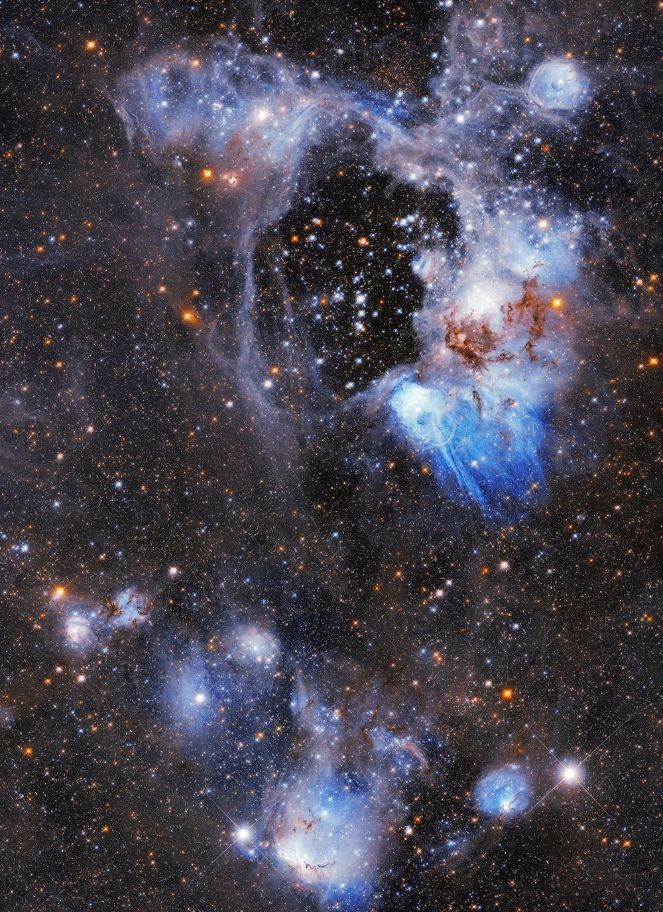

→
Final Averaged Image
Welcome! I am a CS student at Sonoma State University.
A C++ tool that denoises Portable Pixmap (PPM) images by averaging multiple noisy samples to produce a single clean image.

Final Averaged Image
A C++ guitar chord generator that models a fretboard, computes voicings for any chord symbol (e.g. Am, G7, Cmaj7) and stores them in a custom hash table for fast lookup. Supports standard and Drop D tuning, playability filtering, and both interactive and batch CLI modes.

Interactive Mode

Batch Mode
Email: luisgcortesjimenez@gmail.com
LinkedIn: LinkedIn Profile
GitHub: GitHub Profile